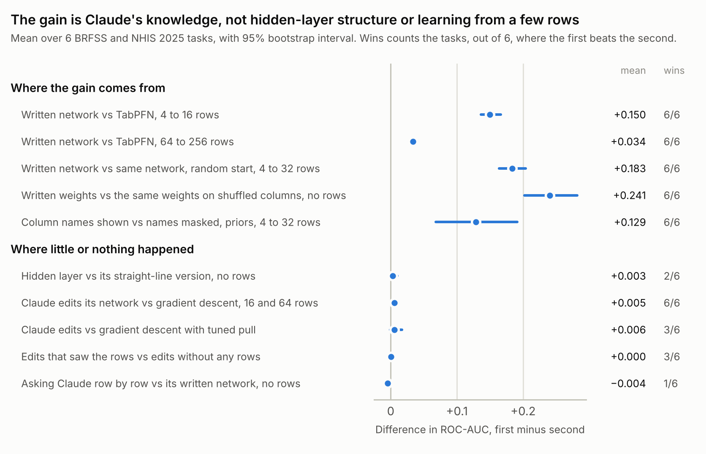

An LLM wrote a model worth 3,500 labelled rows
Why the data has to be newer than the model
Results on LLMs and tables are hard to trust because the benchmarks are on the internet. In our pilot on the LLMTabBench suite, Claude could reproduce rows from 4 of the 16 datasets. So we built six tasks from surveys published after its training cutoff (June 2026). These are the CDC's BRFSS 2025 (files released August 2026) and NHIS 2025 (released September 2026). The tasks are hypertension, diabetes, depression, arthritis, anxiety and loneliness, a question NHIS first asked in 2025.
The rows are new. The epidemiology is not, and that is the point. We want to know what the model's knowledge is worth on data it cannot have seen. Every test was written down and hashed before any reply came back.
The setup
- Claude sees the dataset description, what the target means, and each column's name, type and summary statistics.
- Not allowed any row or any label.
- It writes a small network, logit = c + a·x + Σ out·relu(b + w·x), with a linear part and 16 hidden units, as JSON in raw units. Five samples per task, averaged.
- Then the usual few-shot protocol. Draw k labelled rows (4 to 256, five draws each), fit, and score AUC on 1,500 held-out rows.

With zero rows, the written network scores 0.805. Logistic regression needs all 3,500 rows to reach 0.800, and TabPFN reaches 0.78 at 256.
Training the network on the rows, with a pull toward Claude's weights, keeps it there. Pooled with our pilot (11 more datasets), Claude's priors beat TabPFN at 4 to 16 rows on 17 of 17 tasks, and on 13 of 13 once the memorised datasets are removed.
What carries it

It is knowledge, not structure. Move the same weights onto shuffled columns and the AUC falls to 0.565. Hide the column names and most of the gain disappears on the mental-health tasks. Start the same network from random weights and it loses 0.18.
The hidden layer, though, does nothing. Each unit was meant to capture a threshold or an interaction, and replacing it with its own straight-line approximation costs 0.003. Asking Claude to predict each row directly gives the same accuracy as the written model. Writing the model costs one call per task instead of one per row, and you can read it.
Can Claude learn by editing its own weights?
Inspired by weight-space programming, we gave Claude a feedback loop.
- Claude sees its network's prediction on each of k = 16 or 64 training rows, the true labels, the loss, and what each hidden unit does.
- Not allowed any test row or test score.
- It returns a revised network, for two rounds.
- Compared with gradient descent from the same network on the same rows, a tuned gradient descent, and a control where Claude revises its network with no rows at all.
After the first draft, nothing improved it. Neither round of edits beat the network Claude started with (+0.0004), and edits that saw the rows did no better than edits without them (+0.0001).
The edits did beat plain gradient descent on 6 of 6 tasks, by 0.005, but only because gradient descent slightly damaged a network that was already good while Claude's edits left it where it was. There is no sign it learned from the rows. The honest caveat is that there was no headroom. The starting point already matched 3,500 rows, so a few dozen could not add much. A fair test needs tasks where the prior is weaker.
What this does and doesn't show
- It shows that an LLM's knowledge, written down as a model, transfers to genuinely new data, and on these tasks it is worth thousands of labels. The result holds whether the knowledge is written as priors, as a network, or as direct predictions.
- It is one model (Claude Opus 5.5) in one well-studied domain (US health surveys), with six new tasks. The rows are new, but the relationships are well documented.
- The network structure and the edit loop add nothing here. Whether they help where the prior is weaker is open.
Details. Everything was pre-registered, with a log of every change. The whole study used about $20 of API calls. Claude helped design, run and write up this study, and it was also the model under test, which is one more reason to repeat it with another model family. A paper with code and data is on the way. Related work includes AutoElicit, MARS, LLMTabBench and weight-space programming.